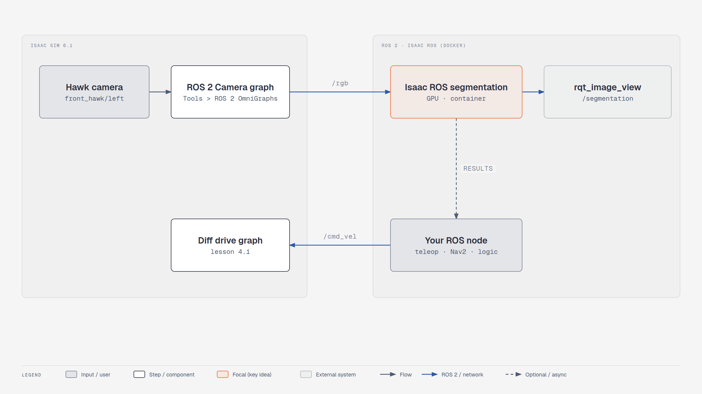

Lesson 4.3: Publish camera images for Isaac ROS#
Your robot software needs to see the scene before it can interpret it. In this lesson, publish Nova Carter's camera and check that an external ROS 2 viewer receives the images.
Finish line for this page: a live camera image in rqt_image_view. Running a segmentation model
is an external continuation, not a result established by this camera check. The existing video also
introduces that wider workflow.
You will learn to
- Publish simulated camera images to ROS 2
- Identify the camera feed needed by an external Isaac ROS pipeline

Concepts#
Camera graphs. A camera publisher needs a render product (the camera rendered at a resolution); the ROS 2 Camera tool creates it plus the publisher nodes for RGB, depth, segmentation or boxes.
Containers and distros. Isaac ROS runs in Docker, often on Humble. DDS lets Humble and Jazzy exchange standard messages if RMW and domain ID match; when in doubt, run Isaac Sim with the same distro.
Course pages: Developing Robots With SIL → Foundations of Image Segmentation, ROS 2, and Isaac ROS · Image Segmentation Without Simulation · Image Segmentation With Simulation
These lessons run Isaac ROS (a Docker-based ROS 2 workspace) next to Isaac Sim. Most of the work happens in Isaac ROS, so follow the course pages for that part. Only the Isaac Sim side changes:
What changes on the Isaac Sim side#
| Course | 6.1 |
|---|---|
| ROS 2 Humble everywhere | Isaac Sim publishes with its bundled Jazzy libs. ROS 2 talks across distros at the DDS level for standard messages (sensor_msgs/Image, CameraInfo), but keep the same RMW (rmw_fastrtps_cpp) and ROS_DOMAIN_ID on both sides. If the Isaac ROS container is Humble and messages don't arrive, launch Isaac Sim with the container's distro: export ROS_DISTRO=humble before ./isaac-sim.sh (6.1 bundles both humble and jazzy libs under exts/isaacsim.ros2.core/) |
| Camera → ROS graph built by hand or via Isaac Utils > ROS2 OmniGraphs > Camera | 🔄 Tools > Robotics > ROS 2 OmniGraphs > Camera. Pick the camera prim and tick RGB (+ optional Depth, Semantic, Instance, BBox). Topics default to rgb, depth, … with Frame ID sim_camera |
| Nova Carter cameras | Same asset (Create > Robots > Nova Carter with Sensors). Hawk/Owl cameras live under chassis_link/sensors/… |
Quick check: camera to ROS 2#
- Scene from lesson 4.1 (Nova Carter in the Simple Room).
- Tools > Robotics > ROS 2 OmniGraphs > Camera → Camera Prim = e.g.
/World/nova_carter/chassis_link/sensors/front_hawk/left/camera_left, tick RGB, OK. - Play, then:
bash source /opt/ros/jazzy/setup.bash ros2 topic hz /rgb ros2 run rqt_image_view rqt_image_view /rgb
A scripted version of this graph is in
standalone_examples/api/isaacsim.ros2.bridge/camera_periodic.py (run it with ./python.sh).
Continue to model inference#
Use the Image Segmentation Without Simulation and Image Segmentation With Simulation lessons in the original NVIDIA learning path for the Isaac ROS environment and model setup. Return to this feed once inference works on the example input used there.
For that continuation, keep an RGB frame and the model's predicted mask side by side. Record the input/output topics and describe at least one visible mistake. Simulator-generated semantic labels are ground truth from the scene; they are not evidence that a segmentation model ran successfully.
Check your result#
| Do this | You should see |
|---|---|
ros2 topic hz /rgb |
a steady rate while playing |
rqt_image_view /rgb |
the Hawk camera image |
Exercises#
- Also publish
depthand view it in RViz as an Image display. - Lower the camera resolution in the dialog and compare
/rgbrates.
Quiz#
-
What does a camera publisher need besides the camera prim?
Answer
A render product. -
Isaac ROS on Humble, Isaac Sim on Jazzy, no messages — one fix?
Answer
Launch Isaac Sim with `ROS_DISTRO=humble` (bundled) and matching RMW/domain.